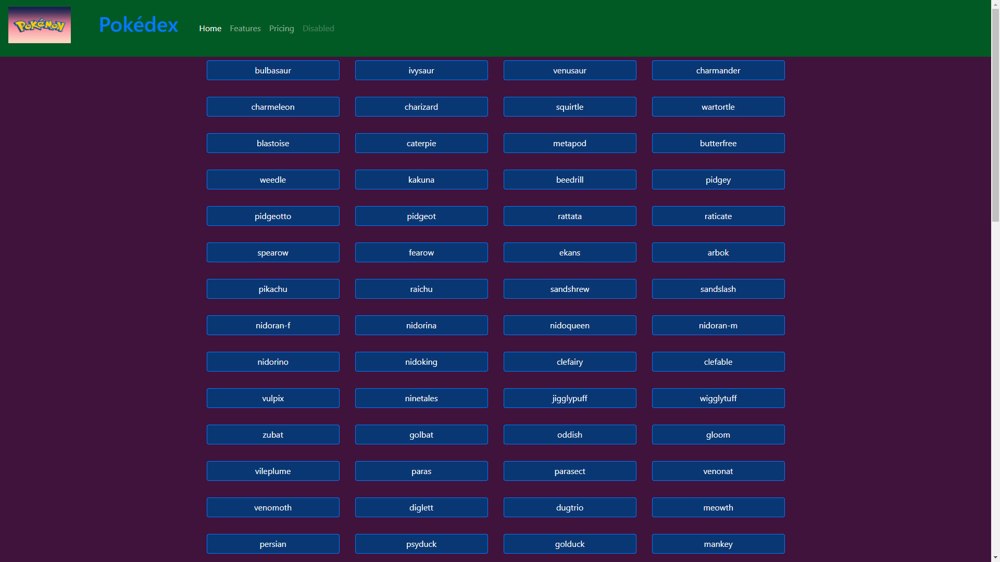
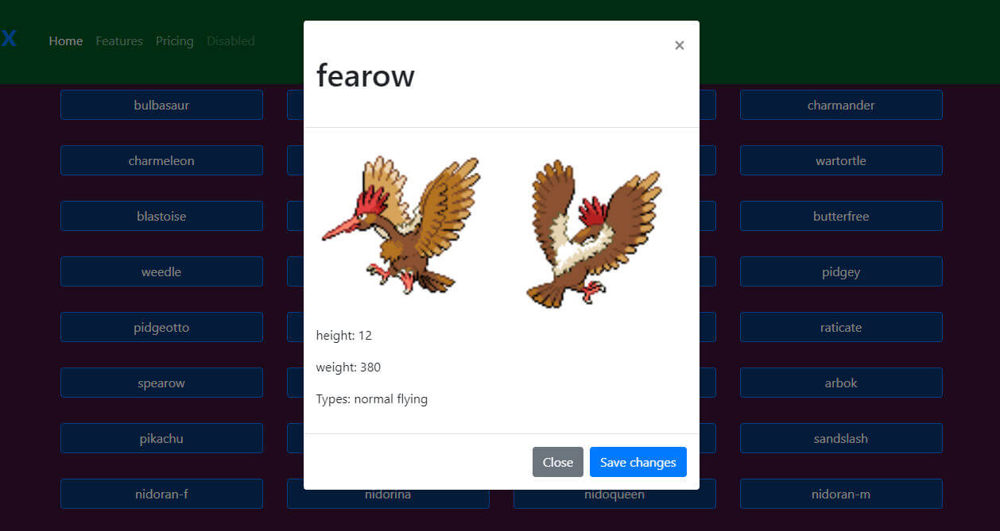
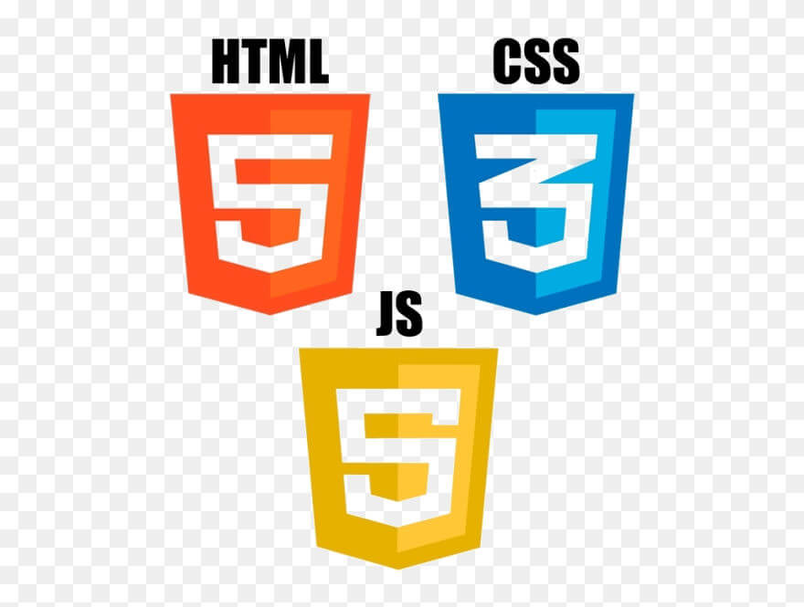
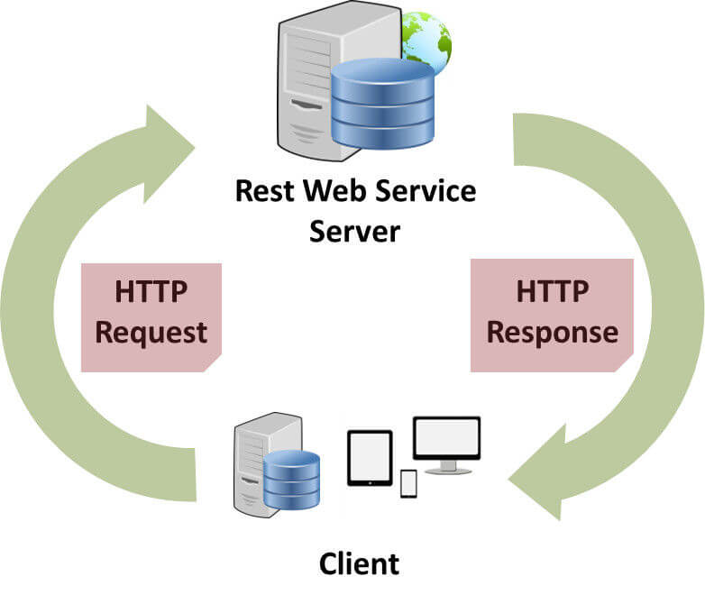
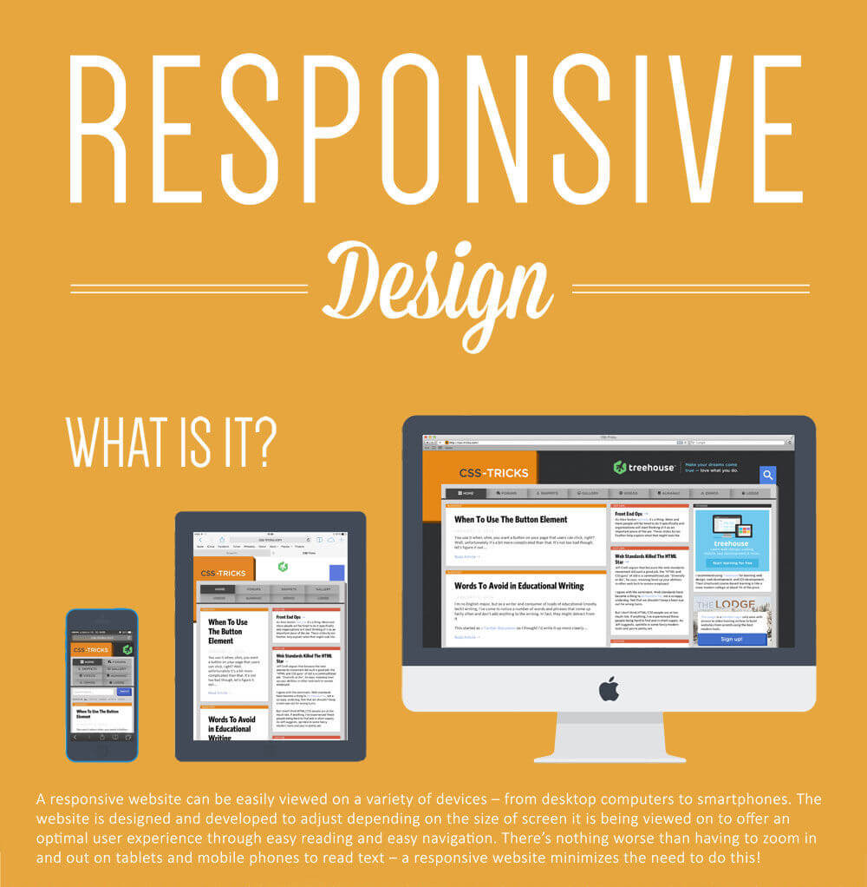
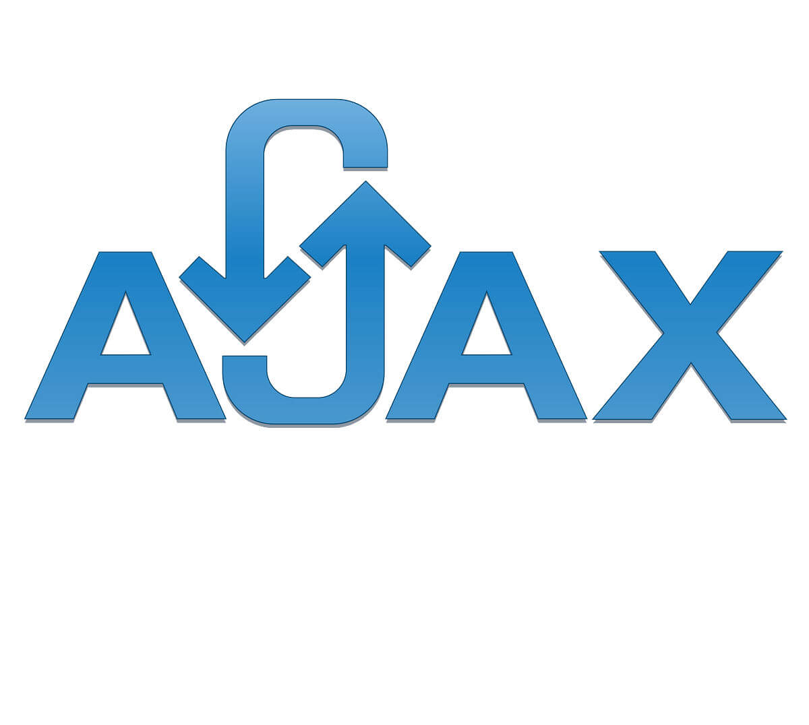

Pokédex Project
-

Overview
Pokédex is a web application that allows users to browse and search for information about Pokémon species. The application features a clean, intuitive interface with a responsive design that adapts to different screen sizes. Users can view detailed information about each Pokémon, including its name, type, abilities, and base stats. The application also includes a search bar that allows users to filter Pokémon by name or type, making it easy to find specific species. Pokédex is built using simple HTML, CSS, and Javascript, with data fetched from the PokéAPI RESTful API.
-

Purpose & Context
One of the large case uses for websites is still basic information retrieval. The Pokédex project was created to demonstrate my ability to build a simple, responsive web application that fetches data from an external API and displays it in a user-friendly way. The project was designed to showcase my skills in front-end development, including HTML, CSS, and Javascript, as well as my ability to work with APIs and handle asynchronous data fetching. By building the Pokédex application, I was able to demonstrate my proficiency in creating interactive, data-driven web applications that provide value to users.
-
Objective
The application needed to support the following features:
- Browse Pokémon: View a list of Pokémon with corresponding images and names.
- View Pokémon Details: Access detailed information about each Pokémon, including its type, abilities, and base stats.
- Search Pokémon: Search for Pokémon by name or type using a search bar.
- Responsive Design: Ensure that the application is responsive and adapts to different screen sizes.
- Fetch Data from API: Use the PokéAPI RESTful API to fetch Pokémon data and display it in the application.
-
Technology Stack Decisions
The Project Brief required the use of simple HTML, CSS, and Javascript to build the Pokédex application. I chose to use the following technologies:
HTML, CSS, and Javascript
HTML, CSS, and Javascript are the core technologies used to build the Pokédex application. HTML provides the structure and content of the web page, CSS styles the page's layout and appearance, and Javascript adds interactivity and dynamic functionality. By combining these three technologies, I was able to create a responsive, user-friendly web application that fetches and displays Pokémon data from the PokéAPI.
RESTful API
The PokéAPI is a RESTful API that provides a wealth of information about Pokémon species, including their names, types, abilities, and base stats. By fetching data from the PokéAPI using Javascript's fetch API, I was able to access detailed information about each Pokémon and display it in the Pokédex application. The RESTful API architecture allowed me to make HTTP requests to the PokéAPI's endpoints and receive JSON responses that I could parse and render in the application.
Responsive Design
Responsive design is a critical aspect of modern web development that ensures web applications look and function well on a variety of devices and screen sizes. By using CSS media queries and flexible layout techniques, I was able to create a responsive design for the Pokédex application that adapts to different screen sizes, from desktops to mobile devices. The responsive design allowed users to access the application on any device and enjoy a consistent, user-friendly experience.
AJAX
AJAX (Asynchronous Javascript and XML) is a technique used to fetch data from a server without reloading the entire web page. By using Javascript's fetch API and async/await syntax, I was able to fetch Pokémon data from the PokéAPI asynchronously and update the UI with the fetched data. AJAX allowed me to create a seamless user experience by fetching data in the background and updating the UI without blocking the main thread.
-
Conclusion
In developing the Pokédex application early in my Web Dev journey, I was able to demonstrate my proficiency in front-end development and my ability to work with external APIs. The project allowed me to showcase my skills in HTML, CSS, and Javascript, as well as my understanding of responsive design, asynchronous data fetching, and DOM manipulation. By building the Pokédex application, I was able to create a user-friendly web application that provides value to users by allowing them to browse and search for information about Pokémon species. The project also helped me gain experience in working with RESTful APIs and handling data fetching in a web application. Overall, the Pokédex project was a valuable learning experience that allowed me to apply my skills in front-end development and create a functional, interactive web application.